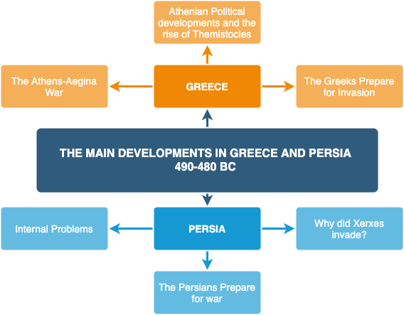
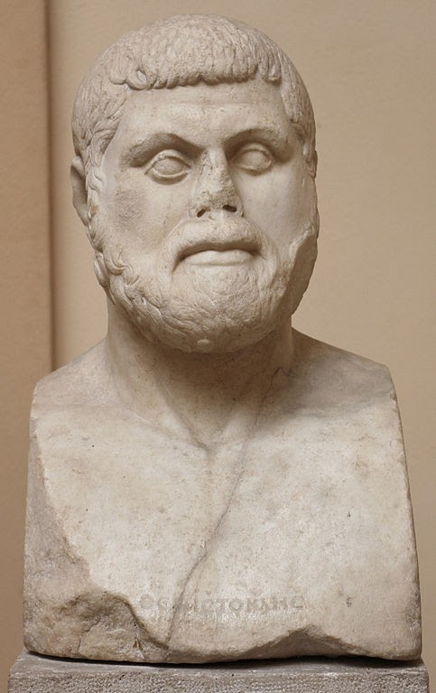
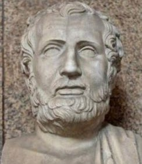
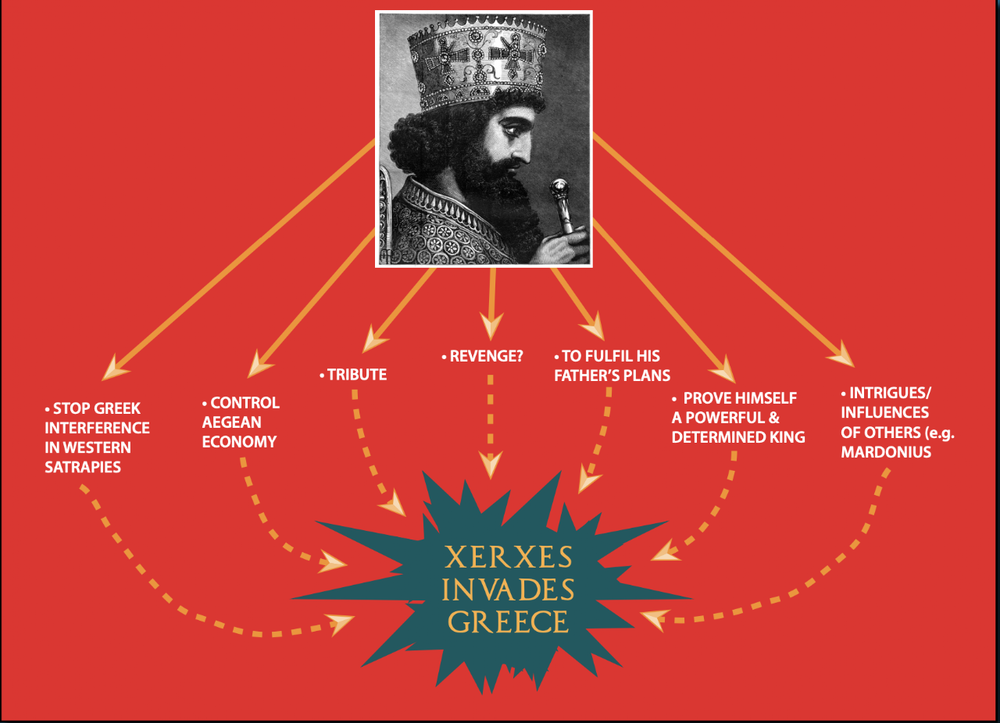
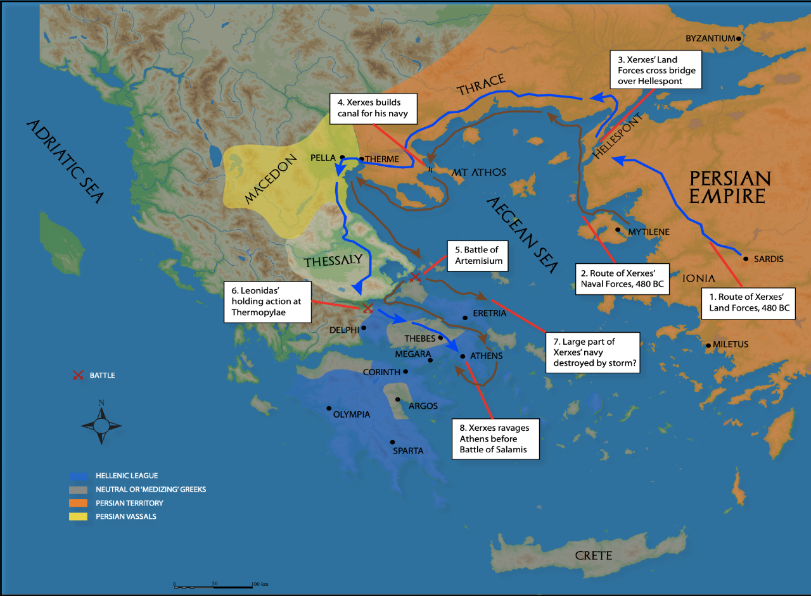
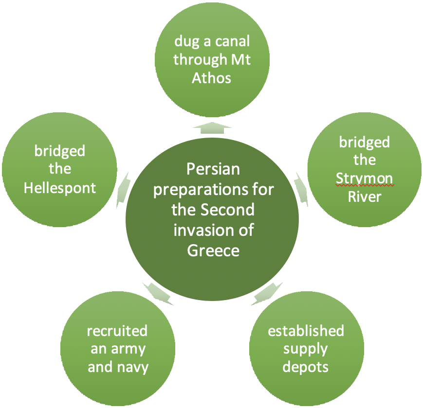
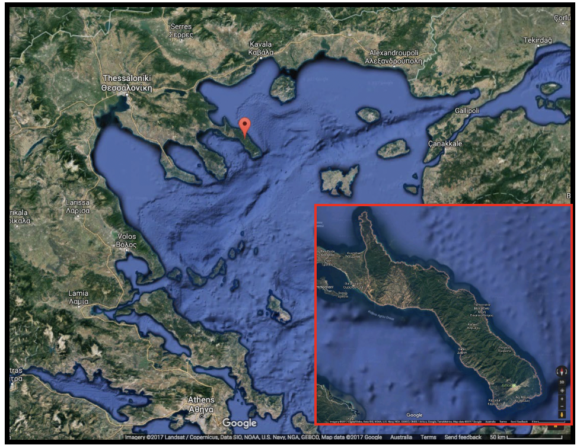

Interwar Period
Political upheaval, military preparations, and the rise of Xerxes (490–480 BC)
Overview

Athens celebrated its Marathon victory, gaining significant prestige among Greek city-states. However, the period between the first and second Persian invasions (490–480 BC) involved substantial political upheaval and military preparations.
Following Marathon, military leader Miltiades attempted an expedition against Paros that failed, leading to his impeachment and death in prison by 488 BC. The island of Aegina's decision to support Persia angered Athens, sparking a naval rivalry that lasted throughout the 480s.
Developments in Greece
Timeline: 490–480 BC
490 BC
- The Battle of Marathon
- The Persians are defeated and return to Asia
489 BC
- Miltiades' unsuccessful campaign against Paros
- Death of the Spartan King, Cleomenes
488 BC
- Death of Miltiades
487 BC
- Democratic changes in Athens — archons selected by lot and strategoi replaces polemarch
- War breaks out between Athens and Aegina. It continues throughout the 480s
486 BC
- Egypt revolts against Persian rule
485 BC
- Death of Darius
- Xerxes becomes King of Persia
484 BC
- Xerxes suppresses the Egyptian revolt
- The Athenian general, Xanthippus, is ostracised
483 BC
- Themistocles convinces the Athenians to use their newly discovered silver wealth on building a fleet; construction of the canal at Mt Athos
482 BC
- The Athenian statesman, Aristides, is ostracised
481 BC
- The Congress of the Isthmus at Corinth meets
480 BC
- Xanthippus and Aristides are recalled from exile as a Persian invasion looms
Athens–Aegina War
Relations between these two powers deteriorated significantly after Cleomenes' death around 489 BC. The conflict involved:
- Aegina demanding return of hostages held in Athens
- Failed Athenian-backed democratic coup in Aegina
- Execution of approximately 700 Aeginetan democrats
- Naval victories followed by failed siege attempts
- Years of tit-for-tat reprisals
This rivalry accelerated Athens' transformation into a naval power, as protecting Attica required stronger maritime capabilities.
Political Changes in Athens
The 480s witnessed increasing democratisation through:
- Growing use of ostracism to remove political rivals
- Declining importance of the archon position
- Rising power of the strategoi (military commanders)
Comparison of Themistocles and Aristides
- Opposed the idea that Athens should be mainly a military power
- Believed that Athens should sacrifice its army for the navy
- Saw Athens' future as a sea state
- As archon in 493–2 BC, began the fortification of the Piraeus peninsula which would eventually provide Athens with security and mercantile dominance in the Greek world
- In 483 BC a rich deposit of silver was discovered at Laurion in the south east corner of Attica, and it was proposed that this new wealth be distributed amongst the Athenian citizenry
- Themistocles argued successfully that it should instead be spent on building new ships
- By 481 BC, Athens had over 100 modern triremes; by 480 BC it had over 200
- Athens was now the largest eastern Greek naval power, and only Corcyra and Syracuse had larger fleets
- Themistocles' foresight would be vindicated at the Battle of Salamis in 480 BC
- Was firmly of the belief that Athens should be a military power
- Opposed the idea of sacrificing the army for a navy
- Athens' hoplite success at Marathon proved the wisdom of sticking with a primarily military force
- Aristides accepted the agricultural nature of Attic life and the success Athens had experienced when its farmer citizenry obeyed the call to arms
- Fifty years of military success against Chalcis, Boetia and Persia convinced him he was right
- In this sense, Aristides was clearly conservative in outlook when compared to the revolutionary thinking of Themistocles
- Herodotus seems to suggest that the war with Aegina weakened Aristides in his struggle for power with Themistocles by proving the wisdom of Themistocles' thinking: "The outbreak of this war at that moment saved Greece by forcing Athens to become a maritime power..." Herodotus, Book VII, 144
Key political figures included:
- Xanthippus — ostracised in 484 BC after helping impeach Miltiades
- Aristides — known as "the just," ostracised in 482 BC despite his reputation for integrity
- Themistocles — emerged as dominant figure, advocating naval development


The oracle's cryptic message about "wooden walls" proved crucial. While older Athenians interpreted this as the ancient Acropolis fence, Themistocles persuaded citizens that it referred to ships — a pivotal interpretation that shaped Greek strategy.
Greek Preparations for Invasion
By 481 BC, Greek city-states recognised invasion was imminent. Xerxes demanded submission tokens from all Greek states except Athens and Sparta, who faced no mercy.
The Hellenic League (481 BC)
- Comprised 31 Greek states under Spartan leadership
- Established penalties for voluntary medism (Persian support), including confiscation of wealth
- Put aside existing feuds, enabling Athens and Aegina's naval cooperation
- Athens accepted Spartan naval command despite growing power
Appeals to other states largely failed — Argos remained neutral, Crete and Corcyra uninvolved, and Syracuse faced Carthaginian threats.
Persian Developments

Internal Challenges
Darius I died in 486 BC, succeeded by his 32-year-old son Xerxes I. Despite serving as Babylon's satrap for roughly a decade, Xerxes faced significant internal challenges:
- Egyptian revolt (finally suppressed in 484 BC) with harsh temple destruction
- Threat from his brother Ariamenes in Bactria (resolved through gifts)
- Babylonian uprising in 482 BC, brutally crushed with lands confiscated
Xerxes' Conflicting Advice
- The Greeks are weak in resources and manpower.
- They fight on open ground which will suit Persia with its greater forces.
- They were too scared to fight me when I marched to Macedonia.
- "... (should the Greeks) be so foolish as to do battle with us, then they will learn that we are the best soldiers in the world ..." Herodotus, Book VII
- We have to bridge the Hellespont and this makes Persia vulnerable. If the bridge was destroyed and the fleet defeated, the army would be stranded in Europe.
- God does not like arrogance in man and invading Greece would be evidence of such arrogance.
- "... I urge you, therefore, to abandon this plan ..." Herodotus, Book VII
Court divisions emerged regarding invasion strategy, with the "youthful, reckless" Mardonius encouraging attack while the "wiser, more tempered" Artabanus counselled caution. Xerxes rejected the cautious approach.
Military Strategy and Preparations


Xerxes planned an unprecedented combined sea–land invasion, learning from Darius's 490 BC failures. Major engineering projects included:
Mt Athos Canal: A four-kilometre canal through the promontory prevented ships from navigating treacherous waters. The Phoenicians proved most skilled, developing techniques to prevent soil collapse during excavation. Workers lived in camps with regular grain supplies from Asia Minor.

Strymon River Bridge: Egyptian and Phoenician workers created cables from flax and papyrus for crossing this barrier.
Supply Depots: Strategic locations were established at White Cape, Doriscus, Eion, and westward points to ensure adequate provisions for troops and animals.
Army and Navy Composition
Over four years, Xerxes assembled forces from across his empire. While ancient sources provide unreliable figures, modern estimates suggest approximately 200,000 infantry, 80,000 cavalry, and 75,000 animals — still an enormous force.
The Immortals comprised the elite Persian infantry unit maintaining constant 10,000-member strength, with 1,000 serving as the king's personal guard.
Naval contributions came from Mediterranean coastal nations: Phoenicia, Egypt, Cyprus, Cilicia, Pamphylia, Lycia, Karia, Ionia, and various Aegean islands. Ships included warships, horse-transports, supply vessels, and floating bridges.